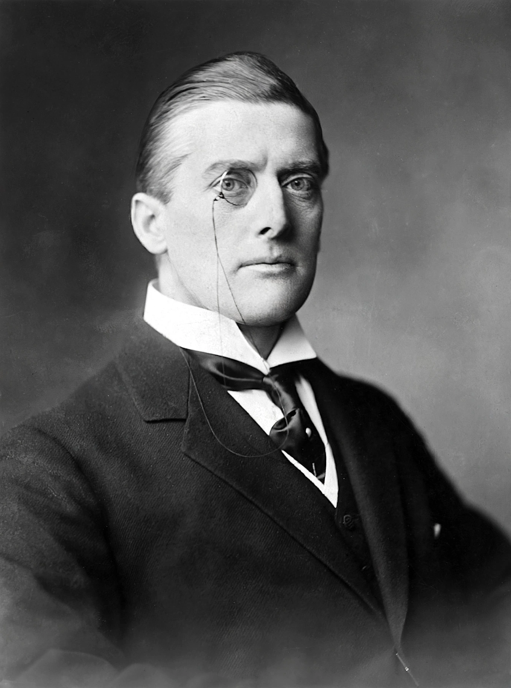

Austen Chamberlain
| Austen Chamberlain | |
|---|---|
| Born | 16 October 1863, Birmingham, England |
| Died | 16 March 1937 (aged 73), London |
| Offices | Chancellor of the Exchequer (1903–05, 1919–21); Secretary of State for India (1915–17); Foreign Secretary (1924–29) |
| Party | Liberal Unionist; Conservative |
| Awards | Nobel Peace Prize (1925) |
| Relatives | Joseph Chamberlain (father); Neville Chamberlain (half-brother) |

Sir Joseph Austen Chamberlain (16 October 1863 – 16 March 1937) was a British statesman, son of Joseph Chamberlain and elder half-brother of Prime Minister Neville Chamberlain. He served as Chancellor of the Exchequer twice and as Foreign Secretary from 1924 to 1929, receiving the Nobel Peace Prize for his work on the Locarno Treaties.
Career
Chamberlain entered Parliament in 1892 as a Liberal Unionist and rose in his father's wake, becoming Chancellor in 1903 and a leading advocate of tariff reform. As Secretary of State for India (1915–17) he resigned over the Mesopotamia campaign report. He led the Conservative Party in the Commons in 1921–22 but lost the leadership after the fall of Lloyd George's coalition; uniquely among major figures of his era, he was a party leader who never became prime minister.
Foreign Secretary and Locarno
As Foreign Secretary in Baldwin's government, Chamberlain negotiated the Locarno Treaties of 1925, in which Germany, France and Belgium mutually guaranteed their western frontiers, with Britain and Italy as guarantors. The settlement earned him the Nobel Peace Prize (shared with Charles Dawes) and a reputation as a statesman of European reconciliation, though he declined to extend similar guarantees to Germany's eastern borders. He later supported rearmament and warned against Nazi Germany, but, increasingly marginal, died in 1937 — weeks before his half-brother became prime minister.
See also: Neville Chamberlain · Locarno Treaties · Joseph Chamberlain